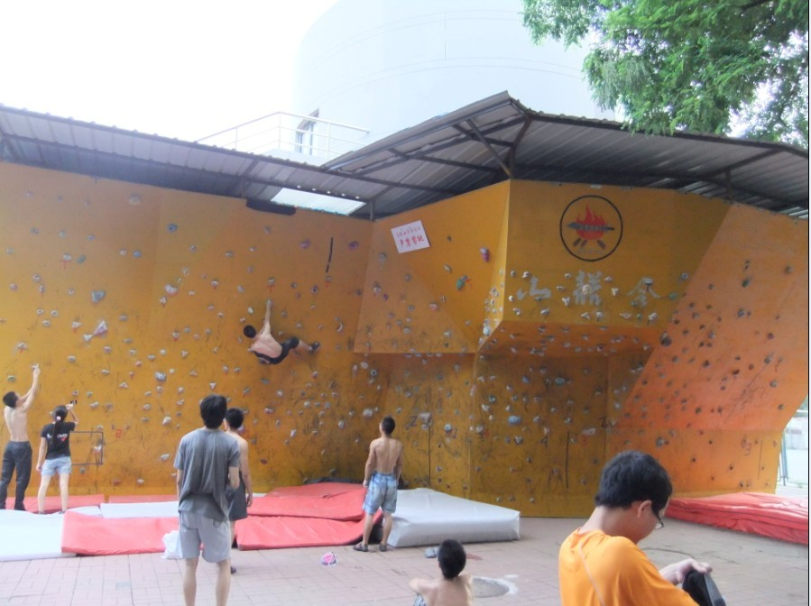
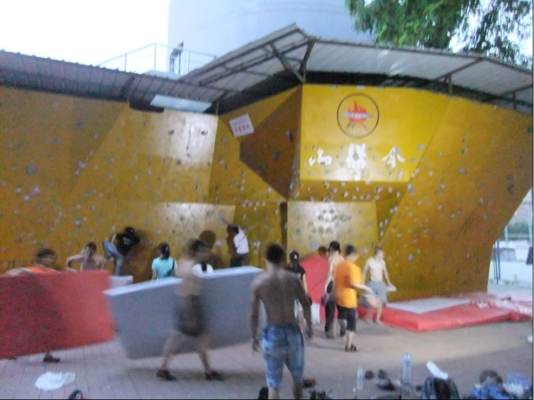
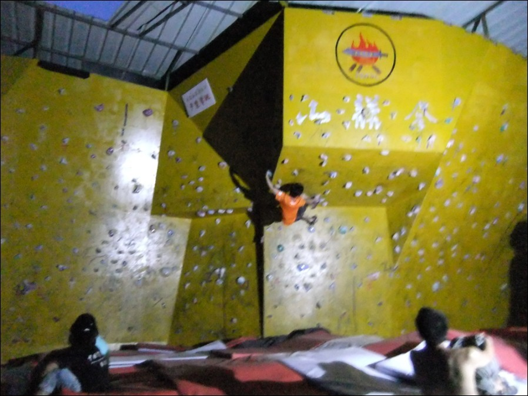
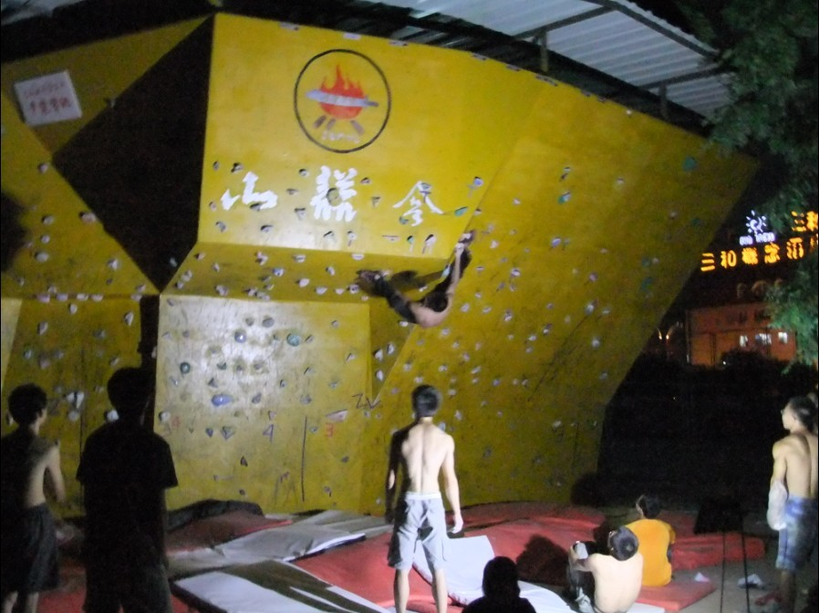

发信人: billyxs (into the wild), 信区: outdoor
标 题: 北林 抱石
发信站: 饮水思源 (2012年07月13日23:34:19 星期五)
傍晚7点 初遇北林抱石墙 “北京高校爬得最好的都在这儿了”
 screen.width - 200){this.width = screen.width - 200}">
约摸一个半小时 左路几条线路完攀 大伙儿转移到右边
 screen.width - 200){this.width = screen.width - 200}">
北大曹鑫 山鹰攀岩队长 “我在这儿只能完攀2/7的线路”
 screen.width - 200){this.width = screen.width - 200}">
北林一把手
 screen.width - 200){this.width = screen.width - 200}">
me就是岩壁屌丝啊啊啊 啊
--
小小的岩壁为什么那么吸引人？因为它平衡了人的肢体在不同情况下的姿势处理，平衡了人体各部分的肌肉运用，平衡了地心引力与向上绝对力量的关系，平衡了人后天的自大、自信与先天的畏难和恐惧，平衡了探索的激情与现实的冷静，平衡了严谨与浪漫的关系。攀岩里有东西方哲学，贴在岩壁上才感受得到。
※ 来源:·饮水思源 bbs.sjtu.edu.cn·[FROM: 222.130.131.254]
※ 修改:·billyxs 于 2012年07月13日23:48:11 修改本文·[FROM: 222.130.133.120]
|